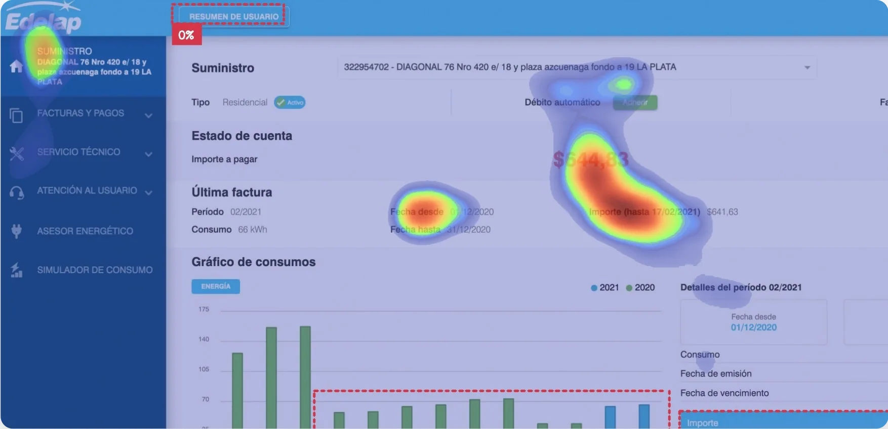
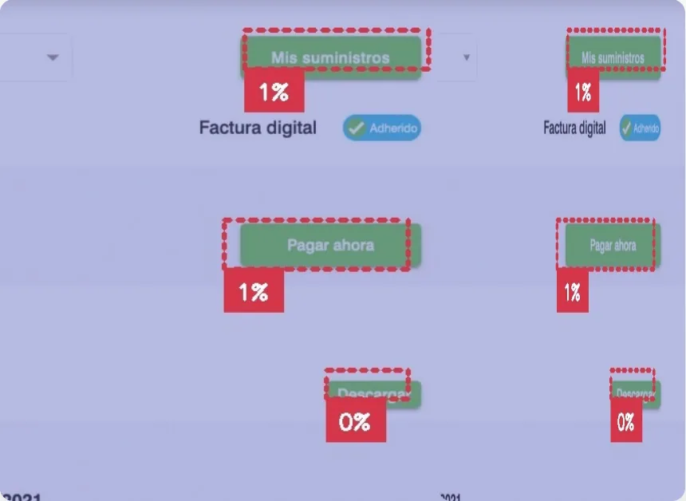
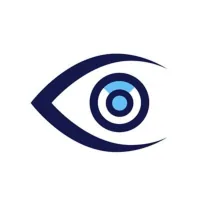
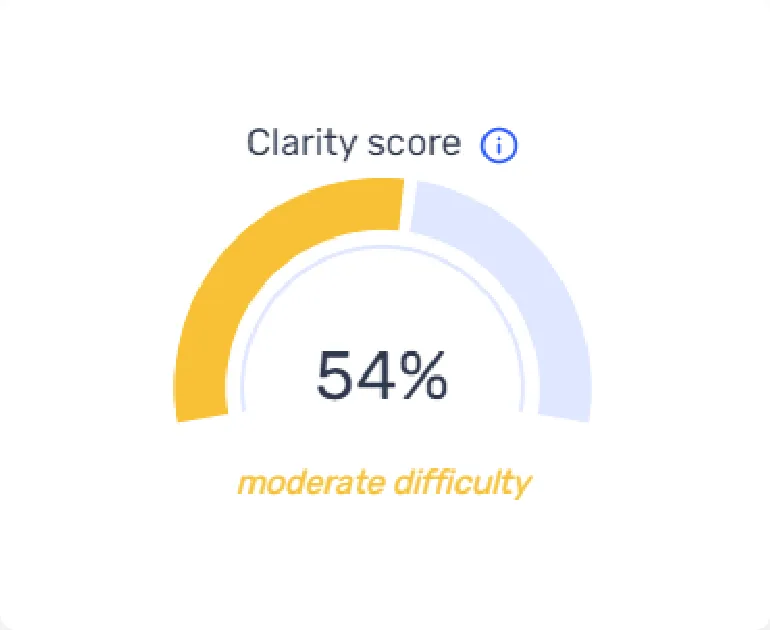
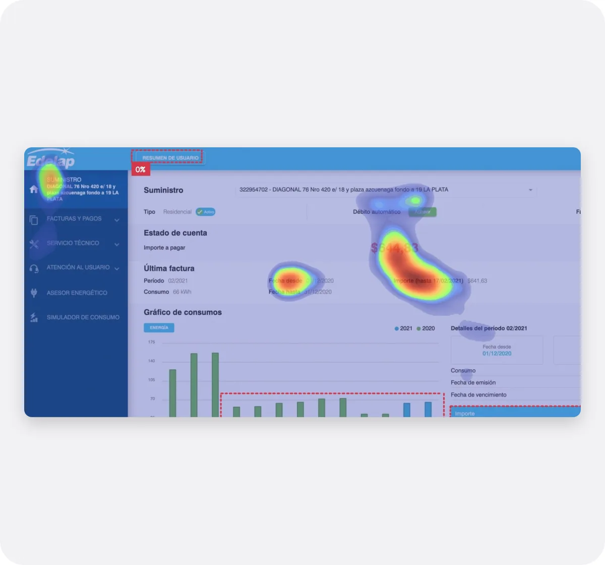
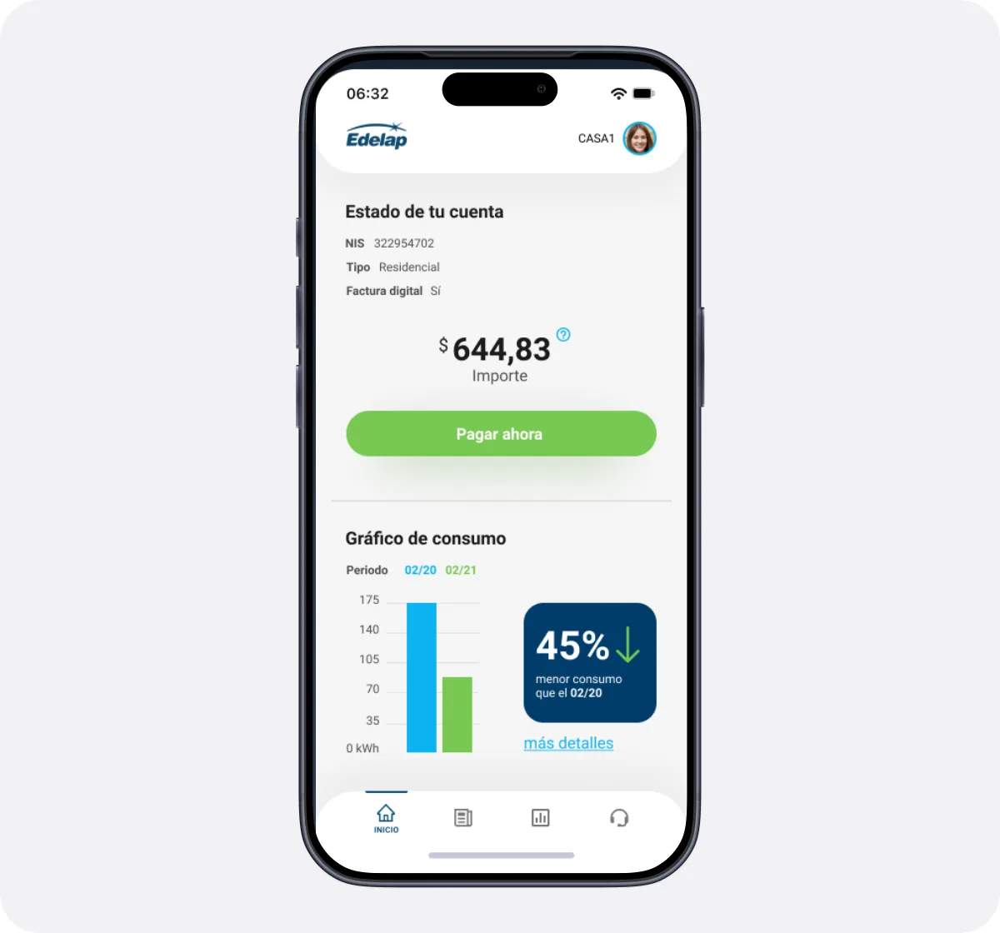
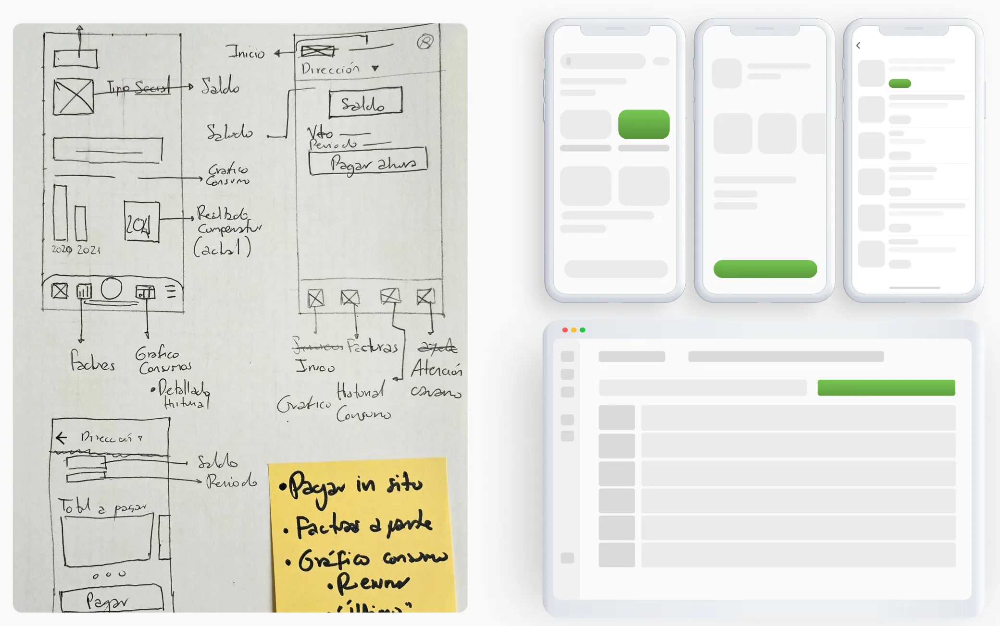
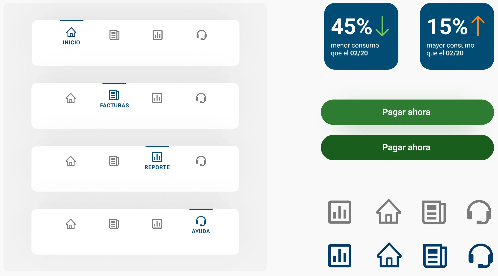
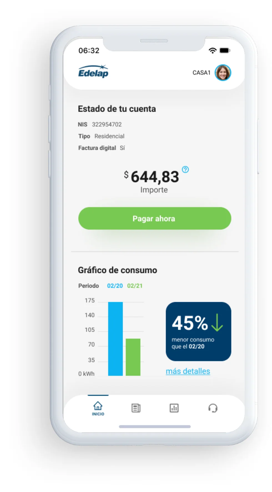

Virtual office at Edelap
Bringing bill payments back to Edelap’s own app
Edelap supplies electricity to about 350,000 customers in Greater La Plata, Argentina. Its virtual office was so confusing that many of them paid through third-party wallets instead. I audited it and redesigned it as a mobile app where paying directly is the first thing people see.
- Role
- Product Designer
- Type
- UX audit and mobile redesign
- Platform
- Desktop to mobile
- Methods
- Heatmaps, card sorting, heuristic review, interviews
At a glance
The problem
The virtual office was so hard to read that “Pagar ahora” got about 1% of the attention, and many customers paid their bill through other apps.
What I did
I audited it with heatmaps, card sorting, a heuristic evaluation and interviews, then turned each finding into a mobile redesign.
The outcome
In usability tests, paying a bill went from 2 minutes to 40 seconds, and the payment success rate rose from 40% to 65%.
The challenge
The old virtual office had usability and accessibility problems. Before redesigning it, I wanted to know where users got stuck, how to measure it and which fixes would matter most.
- Where in the journey do people get stuck?
- How can I measure what it costs them?
- Which fixes would change the most?
Users only looked at the amount due

Heatmap
Attention went to the amount due. Everything else on the screen was mostly ignored.


Attention on each button
None of them got more than 1%

Clarity score
54%: moderate difficulty
Card sorting
39 participants sorted 12 account features into 6 categories. The results showed that the existing navigation didn’t match how people group their account features, which backed a full navigation rework.
| Feature | Supply | Bills & Payments | Technical Support | Customer Service | Energy Advisor | Cost Simulator |
|---|---|---|---|---|---|---|
| Consumption | 71% | No value | No value | No value | 29% | No value |
| Supply | 71% | No value | 29% | No value | No value | No value |
| Address & ID | 43% | No value | 14% | 29% | No value | 14% |
| Account Statement | 43% | No value | 14% | 43% | No value | No value |
| Amount Due (Total) | 43% | 43% | No value | No value | 14% | No value |
| Download Invoice | No value | 100% | No value | No value | No value | No value |
| Digital Invoice | No value | 86% | No value | No value | 14% | No value |
| Direct Debit | 14% | 71% | No value | 14% | No value | No value |
| Last Invoice | 14% | 71% | No value | No value | No value | 14% |
| Last Invoice Period | 14% | 71% | No value | 14% | No value | No value |
| Amount Due by Cutoff Date | 29% | 57% | No value | 14% | No value | No value |
| Consumption Chart | 29% | No value | No value | No value | 43% | 29% |
Heuristic evaluation
I audited the original virtual office against Nielsen’s usability heuristics and found 6 violations, rated on Nielsen’s 0 to 4 severity scale: 2 major (3) and 4 minor (2). Each one became a concrete input for the redesign.
| Description | Location | Violation | Severity |
|---|---|---|---|
| Buttons across the screen vary significantly in size with no consistent visual relationship between them, creating confusion and making it difficult for users to orient themselves spatially. | Supply Screen |
| Major (3) |
| Using the same color for all buttons undermines visual hierarchy. The absence of a highlighted CTA leaves users without a clear sense of direction. The primary action should be reinforced with a distinctive color to differentiate it from secondary buttons on the same screen. | Supply Screen |
| Major (3) |
| A button placed where a title is expected, combined with inconsistent color and positioning compared to other buttons, renders it practically invisible to the user. | Header / User Summary |
| Minor (2) |
| Two checklist icons enclosed in a pill shape strongly resemble a toggle switch, but clicking reveals they are text labels. There is no effective visual feedback to clarify their behavior. Users already associate that pattern with a switch — there is no need to reinvent it. | Supply Screen / Housing Type / Digital Invoice |
| Minor (2) |
| Clicking the "Supply" button navigates to a screen showing a list of supplies under the user's name — the same information already available as a dropdown on the previous screen. No new information is provided, and the button only adds unnecessary visual clutter. | Supply / My Supplies |
| Minor (2) |
| When clicking the "Join" button, the label does not clearly communicate what action will be performed or what the user is committing to. The term lacks contextual meaning, creating ambiguity about the outcome of the interaction | Supply / Join / Popup |
| Minor (2) |
Interviews
Two quotes that sum up what people told me: they got lost, and they paid somewhere else.
I get lost
"I rarely use the website because I almost always end up lost. I prefer other payments platforms.”
Carolina I can't find specific things
I don't like the way they handle the app. It's hard for me to find specific things. I usually use some other external app."
Alexander
What I found
Each problem pointed to a design opportunity:
Problem: The information architecture is inconsistent.
Opportunity: Organize the menu around the most used actions.
Problem: The interface doesn’t follow common UI patterns.
Opportunity: Make the main action obvious
Problem: The text uses words customers don’t recognize.
Opportunity: Write in the words customers use.
Problem: Type, color and shape have no hierarchy.
Opportunity: Build a clear hierarchy of type, color and shape.
From 1% of the attention to the main action
In the original virtual office, “Pagar ahora” (Pay now) received about 1% of user attention. In the redesign, the balance and the payment button are the first things on the home screen.


Wireframes

Components
The components carry the audit’s fixes into the interface: one color for the primary action, consistent button sizes and a four-item navigation.


Nested Settings: Address and supply management are nested within the profile to declutter the main interface.
Primary Focus: The balance due is the clear visual focal point, supported by helpers for immediate status clarity.
Ergonomic CTA: A full-width button placed right below the balance: a large, predictable target that is quick to reach and tap (Fitts’s Law).
Balanced Insights: Home screen shows a high-level YoY comparison, linking to detailed analytics for power users.
What changed after the redesign
Usability test results: the original desktop virtual office compared with the redesigned mobile prototype.
| Metric | Before | After |
|---|---|---|
| Clarity score | 54% | 96% |
| Attention on the pay button | ~1% | 12% |
| Time to pay a bill | 2 m | 40 s |
| Bill payment success rate | 40% | 65% |
Paying a bill went from a hidden action to the main action on the home screen.
Looking back
What worked: combining heatmaps with card sorting showed both where people looked and how they expected the menu to be organized.
What I’d change today
Compare like with like
The before numbers come from the desktop virtual office and the after numbers from the mobile prototype, so part of the change could come from the device. Today I’d test the old and new flows on the same device, with the same task.
Report who took part
The results don’t say how many people took each test, so there’s no way to tell how solid a jump from 40% to 65% is. Today I’d publish the sample size next to every number and read small samples as a direction, not proof.
Put a number on the real problem
The most important finding, that people paid through other apps, came from interviews and never got a number. Today I’d ask Edelap what share of payments happen outside its own channels and use that as the baseline.
Let people name the groups first
The card sort used six categories I defined, which checks a structure but doesn’t discover one. Today I’d start with an open sort and confirm the result with a tree test before high-fidelity screens.